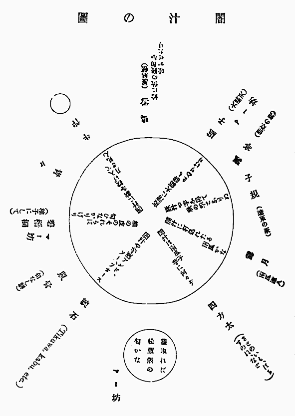

一、時は明治卅二年十月二十一日午後四時過、處は保等登藝須發行所、人は初め七人、後十人半、半はマー坊なり。
一、闇汁の催しに群議一決して、客も主も各物買ひに出づ。取り殘されたる我ひとり横に長くなりて淋しげに人々の歸を待つ。
一、おくればせに來られし鳴雪翁、持寄りと聞いて、
 々に出で行きたまふ。出がけに「下駄の齒が出て來ても善いのですか」と諧謔一番。
々に出で行きたまふ。出がけに「下駄の齒が出て來ても善いのですか」と諧謔一番。一、一人歸り二人歸り、直に臺所に入りて、自ら洗ひ自ら切る。時にクス／＼と忍び笑ふ聲、忽ちハヽヽヽヽとどよみ笑ふ聲。
一、準備出來る迄に一會催すべしとの議出づ。座上柿あり、柿を以て題とす。鳴雪翁曰く十句の時は屹度句が失せますと。果して然り。
一、飄亭、青々後れて到る。物無く句無し。
一、一個の大鍋は座敷の中央に据ゑられ、鍋を圍んで坐する人九人、伏す人一人、いづれも眼を圓くし、鼻息を荒くして鍋の中を睥睨す。鍋の中から仁木彈正でもせり上りさうな見え［＃「え」は「江」のくずし字］なり。ぬば玉の闇汁會はいよ／＼幕あきとなりぬ。
一、鳴雪翁曰く、飯を喰ふて來て殘念しましたと。先づ椀を取つてなみ／＼と盛る。それより右
 りに順を追ふて各盛る、廻つて未だ半に至らず鳴雪翁既に二杯目を盛る。「實にうまいです」。
りに順を追ふて各盛る、廻つて未だ半に至らず鳴雪翁既に二杯目を盛る。「實にうまいです」。一、盛るに從つて杓子にかゝる者、青物類はいふに及ばず、豚あり、魚あり、餅あり、竹輪あり、海の物、山の物、何が何といふ事を知らず。只かゝらぬは一寸八分の觀音樣あるのみ。
一、鍋の中を杓子にてかきまぜながら「ヤー／＼
 餅がかゝつたぞ、誰だ／＼、大福を入れたのは」と碧梧桐※［＃「口＋斗」、20-6］ぶ。皆々笑ふ。固より入れた者の外に入れた者を知らず。
餅がかゝつたぞ、誰だ／＼、大福を入れたのは」と碧梧桐※［＃「口＋斗」、20-6］ぶ。皆々笑ふ。固より入れた者の外に入れた者を知らず。一、鳴雪翁曰く、うまい。碧梧桐曰く、うまい。四方太曰く、うまい。繞石曰く、うまい。我曰く、うまい。虚子曰く、うまい。露月獨り言はず、立どころに三椀を盡す。
一、マー坊出沒常無し、こゝに隱れ彼處に現る。或は飯櫃の邊に彷徨し、或は碧梧桐の膝に上る。やがて向ひ側にある父の顏を見るや其側こひしく、碧梧桐の背を通り拔け牛伴のうしろより進まんとし、忽ち鳴雪翁の髯に逢著して泣き／＼走り返る。鳴雪翁直ちに髯を掩ふて曰く、わるかつた／＼。
一、下戸も喰ひ、上戸も喰ひ、すこやかなる者も喰ひ、病める者も喰ひ、飯喰ふた者も喰ひ、飯喰はぬ者も喰ふ。喰ひ／＼て鍋の底現るゝ時、第二の鍋は來りぬ。衆皆腹を撫でゝ未だ手を出さゞるに、露月默々として既に四椀目を盛りつゝあり。
一、初は牛飮馬食の勢あり。中頃は牛を飮み馬を食ふの慨あり。第二の鍋未だ半を盡さゞるに、胃滿ち神疲れ、漸く牛に飮まれ馬に食はれんずるの有樣を示しぬ。我は柿腹を抱えて衆に先だつて歸る。
一、圖中の名は各人の位置を示し、名の下には各の持寄り品を示す。但し後日調べたる者と知るべし。
一、名の上に記したる句は各人の作なり。
一、鳴雪翁は別に蛤一箇宛を椀に入れて各に配る。之に湯を注げば蛤自ら開きて昆布、辻占、麩、鰕など躍り出る仕掛なり。
一、四方太闇汁十句の作あり。其内
芋買うて歸れば露月既に在り 四方太
闇汁の南瓜におくれ里の芋 同
芋五合大汁鍋の底に在り 同
里芋を二つの鍋に分ちけり 同
芋入れて汁が煮えくりかへるかな 同
芋買うて臺所から上りけり 同
闇汁の南瓜におくれ里の芋 同
芋五合大汁鍋の底に在り 同
里芋を二つの鍋に分ちけり 同
芋入れて汁が煮えくりかへるかな 同
芋買うて臺所から上りけり 同